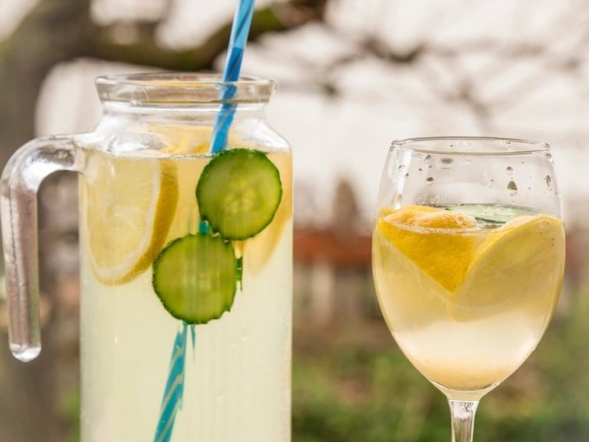

FrisKomkommer & Munt Cooler
Het glas dat je hoofd koeler maakt dan de avond is.
Bekijk het recept
Ingrediënten
- 6 dunne schijfjes komkommer
- 8 blaadjes verse munt
- 20 ml vers limoensap
- 10 ml agavesiroop
- 150 ml tonic of spuitwater
- Veel ijs
Bereiding
- Druk de komkommer en de munt zacht aan in het glas: kneuzen, niet fijnmalen.
- Voeg limoensap en agavesiroop toe en roer tot de siroop is opgelost.
- Vul het glas tot de rand met ijs.
- Schenk de tonic er langzaam overheen en roer één keer van onder naar boven.